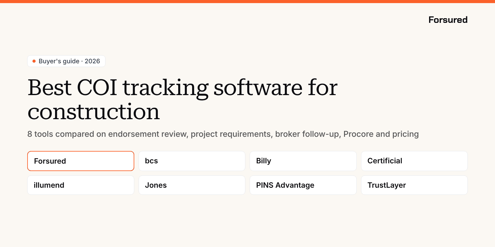

Blog / Buyer's guide
Buyer's guideBest COI tracking software for construction (2026): 8 tools compared
What each tool checks on a subcontractor COI, who fixes the gap, whether it connects to Procore, and what it costs, from Forsured, Billy, bcs, Jones, PINS Advantage, TrustLayer, illumend and Certificial.

You might have 40 subcontractors on a job, each with a certificate of insurance and a stack of endorsements, and every contract asks for something a little different. A COI on file doesn't tell you whether the additional insured endorsement covers completed operations, whether the umbrella meets this owner's limit, or whether the policy will still be in force in March. COI tracking software for construction has to answer those questions for every sub on every project, and keep answering them until closeout. That's the job of subcontractor COI tracking, and it's more than a reminder before a policy expires.
This guide is for general contractors' risk, compliance and project teams, and the insurance brokers who work with them. It compares eight COI tracking software tools side by side, so you can see what each one checks, who fixes a gap when one turns up, how it fits with Procore, and what it costs, then pick the best COI tracking software for the way your company builds.
We compared every tool on the same six criteria. Endorsement review and requirements set by project matter most, because that's where a subcontractor COI that looks complete still leaves you uncovered. Every fact in the tables comes from each vendor's published product, pricing and integration pages and the Procore Marketplace, all linked under Sources, so you can check it and weigh it your own way.
Forsured is listed first. They're the tool on this list built around project-level requirements and exceptions, with a shared workspace where the contractor's broker sees the requirement, the document and the project in one place, and a person on your team approving every result. They're also the newest: onboarding is by waitlist, pricing isn't published, and the Procore integration is open to early access customers only.
What COI tracking software for construction has to do
Expiration reminders are the easy part. The gaps that cost general contractors money are in the endorsements and the limits, and they only show up when the COI is read against the requirements of the project the sub is actually on. Good subcontractor COI tracking software for construction should:
- Read the endorsement forms, not just the boxes on the certificate. An additional insured box checked on an ACORD 25 isn't the endorsement. See how to check a contractor COI against your project requirements.
- Hold different requirements for different projects, owners and lenders, with exceptions where the work calls for them.
- Tell the broker exactly what's missing, so the corrected certificate or endorsement answers the real requirement.
- Keep checking after approval, through renewals and mid-term changes. A COI on file isn't proof of coverage.
- Fit into Procore and your accounting system, so compliance status is where your project and payment teams already work.
The 8 tools at a glance
Here's how the eight compare as COI tracking software for construction, before the detail on each one.
| Tool | Best for | Endorsement review | Requirements by project | Final call made by | Procore Marketplace | Published pricing |
|---|---|---|---|---|---|---|
| Forsured | Checking every COI against the project it's for, with the broker in the fix | Yes | Yes, with exceptions | Your team | No, early access integration | No |
| bcs | Published per-vendor rates and a free tier | Yes | Yes | AI, with disagreements sent to a person | Yes | Yes |
| Billy | COIs, lien waivers and certified payroll in one construction tool | Yes | Yes | Your team, or Billy's reviewers | Yes | Starting price only |
| Certificial | Live policy data from the agent of record | Yes | Yes | Your team | No | Yes |
| illumend (formerly myCOI) | Letting AI make the call on high volume | Yes | By contract | AI | Yes, as myCOI | No |
| Jones | GCs that also own or manage real estate | Yes, plus full policies as an add-on | Yes | AI and Jones specialists | Yes | Model only |
| PINS Advantage | Deep endorsement wording checks inside Procore | Yes, wording level | Yes, from contracts | Your team | Yes | Yes |
| TrustLayer | A large vendor network and broker partners | Yes | Yes | AI, confirmed by a person | Yes | Free tier only |
How we compared them
We looked at the same six things for every tool, in this order of weight:
- Endorsement review. Does it read the additional insured, waiver of subrogation and primary and noncontributory endorsements against your requirements, or only the certificate?
- Requirements by project. Can each project carry its own limits, endorsements and exceptions?
- Broker in the fix. When a subcontractor COI falls short, how does the contractor's broker learn what's missing, and where do they send the fix?
- Monitoring after approval. Renewal requests, expirations and changes to coverage mid-project.
- Who makes the final call. AI on its own, your team, or a managed service. AI COI tracking varies most here.
- Construction fit and pricing. Procore and construction accounting integrations, and whether you can see COI tracking software pricing before a sales call.
The best COI tracking software for construction, tool by tool
1. Forsured: best for checking every COI against the project it's for
Forsured is construction insurance compliance software for general contractors, trade contractors and the brokers who insure them. You set your insurance standards once, then apply project-level requirements and exceptions where a job needs them. Forsured reads each certificate and endorsement against that project's requirements and flags each gap with the reason, such as a missing ongoing operations additional insured endorsement (CG 20 10) or an umbrella below the required aggregate. The broker gets the gap in a shared workspace where they see the requirement, the document and the project, instead of another email chain. After approval, Forsured keeps tracking renewals and coverage changes across active projects. AI finds and explains each issue, and a person on your team approves or waives it.
Good fit if your projects carry different owner, lender or contract requirements, you want the broker working from the same requirement you are, and you want a person on every approval.
Watch for: onboarding is by waitlist, the Procore integration is for early access customers and isn't on the Procore Marketplace yet, and there's no managed review service.
Pricing: not published. Forsured offers a free COI risk check: send one project's requirements and a contractor COI or two, and they'll show you every gap.
2. bcs: best for published per-vendor pricing and a free tier
bcs have tracked insurance certificates since 2008, for property managers, general contractors, risk managers and procurement teams. Requirement templates can be set by vendor type, project or property. Their AI reads each certificate twice, with a long-running extractor and a separate vision model, and sends any disagreement to a person. AI endorsement review identifies the endorsement type and walks you through it with an endorsement matrix. On the full-service plan, US-based analysts handle outreach and call the vendor and, when needed, the vendor's insurance agent, with no cap on attempts.
Good fit if you want to start free, see rates up front, and keep the option of handing outreach to a service.
Watch for: bcs isn't built only for construction, and full policy and description of operations review comes with full service, which carries a $10,000 annual minimum.
Pricing: free up to 25 vendors with every software feature. Self-service is $11.40 per vendor per year. Full service starts at $17.80 per vendor per year with a $10,000 annual minimum.
3. Billy: best for COIs, lien waivers and payroll in one construction tool
Billy are COI tracking software for construction only: general contractors, developers, owners and homebuilders. Beyond COIs, they track prequalification, certified payroll, lien waivers and warranties through closeout. Each requirement is set per project, and their AI checks each COI for missing endorsements like CG 20 10, CG 20 37 and waiver of subrogation. Renewal requests go out three months before a policy expires, one month before, and on the day. Compliance status can sync to your accounting system to hold a payment before the check run. You can run it yourself, or use their managed plan, where CRIS-certified reviewers check every certificate and endorsement.
Good fit if you run Procore with a construction ERP such as Sage, Viewpoint Vista, CMiC or JD Edwards, and want payment holds tied to compliance.
Watch for: brokers fix gaps from a deficiency list and an upload link rather than a shared workspace, and there's no full price list.
Pricing: plans start as low as $500 a year and scale with the number of vendors and the plan. A free trial is available.
4. Certificial: best for live policy data from the agent of record
Certificial work differently from the rest of this list. Certificates come only from the vendor's agent of record, through a network of more than 25,000 agencies, and the agency's system keeps each certificate current. That lets Certificial flag mid-term cancellations and limit changes as they happen rather than at the next renewal. Their EndorsementIQ pulls the carrier, form number, policy number and exclusions from each endorsement so you can accept or reject it against your criteria, and a project layer handles more than one set of requirements. Agents and brokers use it free.
Good fit if you run a large vendor program and want to hear about a cancellation the day it happens.
Watch for: there's no Procore integration on their site or the Procore Marketplace, the product is aimed at enterprise and procurement teams rather than construction, and live data depends on the vendor's agency being on the network.
Pricing: free for up to 5 suppliers. Professional starts at $99 a month. Enterprise is quoted.
5. illumend (formerly myCOI): best for letting AI make the call on high volume
illumend is the AI platform from myCOI, who've worked in third-party insurance compliance since 2009 from Indianapolis. The old mycoitracking.com address now redirects to illumend, and myCOI customers are being moved over. Their AI, Lumie, reads every line of each COI and endorsement, from additional insureds and waivers of subrogation to primary and noncontributory wording and per project aggregates (see what per project aggregate means on a COI), and decides whether the language meets your contract. It raises a hand only on items it can't resolve, and follows up with vendors and their brokers until gaps close. In Procore, illumend builds the agreement from a commitment and rechecks the certificate at renewal.
Good fit if you track a high volume of vendors across more than one industry and you're comfortable with AI COI tracking that decides on its own.
Watch for: requirements follow the contract rather than separate project-level requirement sets, the Procore Marketplace listing still carries the myCOI name, and more human oversight is an add-on.
Pricing: not published.
6. Jones: best for GCs that also own or manage real estate
Jones serve commercial real estate owners and property managers as well as construction general contractors, from New York. AI and Jones's insurance specialists review COIs and endorsements, and the Policy Review add-on reads full policies for exclusions a certificate won't show. Requirements can be set by record, project or property, and in Procore you can track insurance at the project or company level. The Operator tier adds a concierge team that handles the back-and-forth with brokers, agents and third parties.
Good fit if your company builds and also owns or manages property, and you want exclusions in the full policy reviewed.
Watch for: most broker follow-up sits in the Operator tier, Policy Review is charged per policy, and rates aren't published.
Pricing: per tenant or vendor record per property, billed annually, with unlimited COI reviews for each record. Quotes come from sales. Jones never charges your vendors or subcontractors.
7. PINS Advantage: best for deep endorsement wording checks inside Procore
PINS Advantage started with a California insurance agent supporting commercial contractors. PINS reads every certificate and endorsement against requirements built from your contracts, shows its reasoning and the page it came from, and goes into the wording: whether a CG D3 81 meets a CG 20 10 and CG 20 37 requirement, for example, or whether privity of contract language limits who's covered. Your team approves, rejects or waives every result. In Procore, PINS reviews each COI against the requirements tied to the commitment and writes Approved or Not Approved back to the project directory and the commitment's compliance tab, which Procore Pay uses.
Good fit if Procore is the center of your workflow and you want Procore COI tracking with endorsement wording checked and a person on every decision.
Watch for: brokers respond through an upload link and revised endorsement requests rather than a shared workspace, and monitoring is renewal and expiration notices rather than live policy data.
Pricing: plans start around $300 a month with unlimited users and onboarding, and most annual contracts come in at $7,500 or less. There are no feature tiers, and the Procore integration is included.
8. TrustLayer: best for a large vendor network and broker partners
TrustLayer serve construction, real estate, retail, finance and other industries. Their Enhanced Endorsements feature checks for the language you require, including additional insured and common equivalents, primary and noncontributory, waiver of subrogation, and blanket versus scheduled endorsements, then shows the page that proves it, with a person confirming the result. Insurance can be tracked per project. Brokers get their own access, and some brokers resell TrustLayer and offer review services. Pulse verifies a policy at the source, and TrustLayer+ is their full-service option with licensed insurance professionals.
Good fit if your subs' brokers already use TrustLayer, or you want policy verification at the source.
Watch for: the Procore, CMiC and Vista integrations start at the paid Pro tier, and paid prices are by quote.
Pricing: free up to 50 vendors. Paid tiers are quoted.
COI tracking software pricing, side by side
COI tracking software pricing is usually set by how many vendors or certificates you track, and only some vendors publish it. Here's what each one shows before you talk to sales:
| Tool | Free option | Published price | How it's priced |
|---|---|---|---|
| Forsured | Free COI risk check | None | By quote, early access |
| bcs | Up to 25 vendors | $11.40 per vendor per year; full service from $17.80 with a $10,000 minimum | Per vendor |
| Billy | Free trial | From $500 a year | By vendors tracked and plan |
| Certificial | Up to 5 suppliers | Professional from $99 a month | By plan |
| illumend | None listed | None | By quote |
| Jones | None listed | None | Per record per property, annual |
| PINS Advantage | None listed | From about $300 a month; most contracts $7,500 a year or less | By certificates tracked |
| TrustLayer | Up to 50 vendors | None for paid tiers | By quote |
When you compare quotes, ask whether the price covers endorsement review or only the certificate, whether integrations cost extra, and whether your subs ever pay to upload. Low COI tracking software pricing that leaves endorsements to your team can cost more in staff hours than it saves, so the best COI tracking software for you isn't always the cheapest.
Procore COI tracking: who connects and how
Six of the eight tools are listed on the Procore Marketplace, and they do different things with the connection. For Procore COI tracking, ask where the status lands and whether it can hold a payment:
- PINS Advantage reviews each COI against the commitment's requirements and writes Approved or Not Approved to the project directory and the commitment's compliance tab used by Procore Pay. The integration is included in every plan.
- Billy syncs to Procore and a long list of construction accounting systems, and can hold payment before the check run.
- Jones tracks insurance at the project or company level in Procore.
- illumend creates the agreement from a Procore commitment, shows status on its insurance tab, and rechecks at renewal. Their Marketplace listing is still under myCOI.
- TrustLayer tracks insurance per project in Procore, from the Pro tier up.
- bcs connects to Procore alongside Yardi and MRI.
- Forsured offers a Procore integration to early access customers, outside the Marketplace for now.
- Certificial doesn't list a Procore integration.
Procore COI tracking only helps if the review behind it is right. A green status in Procore built on an unread endorsement is still a gap.
AI COI tracking: who makes the final call
Every tool here uses AI to read certificates. The real question with AI COI tracking is what happens after the AI reads it:
- AI decides: illumend's Lumie makes each decision and only escalates items it can't resolve.
- AI with a check: bcs reads each certificate twice and sends disagreements to a person. TrustLayer's endorsement review is confirmed by a person.
- Your team decides: Forsured and PINS Advantage find and explain each issue, and your people approve, reject or waive it. Certificial extracts endorsement details for you to accept or reject.
- Someone else's team decides: Billy's managed plan, bcs full service, Jones's specialists and TrustLayer+ put their reviewers on your certificates.
None of these is wrong. AI COI tracking that decides on its own moves fastest on volume. A person on every approval costs more time and leaves a clear record of who accepted a gap and why. Pick the model that matches who carries the risk at your company when a claim lands. For the endorsements that most often decide that claim, see whether additional insured status covers you after the job is done and what primary and noncontributory means on a COI.
Subcontractor COI tracking: how to choose
The best COI tracking software for one general contractor can be the wrong fit for the next. Before you book demos, answer these five questions about your own subcontractor COI tracking, and use the answers to narrow the list of COI tracking software for construction you'll see:
- Do your requirements change by project? If owners and lenders ask for different limits and endorsements, you need requirements set per project, with exceptions.
- Who reads the endorsements today? If nobody does, put endorsement review ahead of everything else on your list.
- How does a gap get fixed? Watch a demo of a deficient COI going to a broker and coming back corrected.
- Where do your teams work? If it's Procore, ask what Procore COI tracking status the tool writes back and whether it can hold payment.
- Software or service? Decide whether your team will review AI COI tracking results, or whether you'd rather pay someone to handle subcontractor COI tracking for you.
State rules matter too. Workers' comp thresholds and anti-indemnity statutes change what you can require, so check contractor insurance requirements by state before you build your templates.
About this ranking
This ranking was written by the Forsured team. Forsured makes one of the eight tools compared here and is listed first; the other seven follow in alphabetical order. No vendor paid to be included or saw this page before it was published. Every product, integration and pricing fact comes from the vendor's own public pages and the Procore Marketplace as of Nov 11, 2026. Prices and features change, so confirm them with each vendor. We didn't include review-site ratings.
Get new posts by email.
New posts on contractor COIs and project requirements, plus the coverage gaps we're seeing on real projects. Short and plain.
You're on the list. Thanks for reading.
No spam. Unsubscribe from any email.
About Forsured
Forsured is construction insurance compliance software for general contractors and the brokers who insure their trade contractors. You set each project's insurance requirements once. Forsured reads every contractor COI and endorsement against them, flags each gap with the reason, and keeps checking through renewals until the job is done.
- Project requirements with exceptions, not one template for every job
- Endorsement review (additional insured, waiver of subrogation, primary and noncontributory), not just the certificate
- A shared workspace where the contractor's broker sees exactly what's missing
- A person on your team approves every result, with a full review history
“What stood out to us is that Forsured doesn't just organize the paperwork. It helps us understand what meets the project requirements, what needs attention, and what needs to happen next. That clarity across the GC, subcontractor, and broker is where we see the real value.”
Send us one project's requirements and a contractor COI or two. We'll show you every gap we find, free.
Common questions
What is the best COI tracking software for construction?
The best COI tracking software for construction depends on how you work. For requirements that change by project and a broker who sees exactly what's missing, look at Forsured. For endorsement wording checks inside Procore, PINS Advantage. For published per-vendor pricing and a free tier, bcs. For COIs, lien waivers and certified payroll in one construction tool, Billy. For live policy data from the agent, Certificial.
How much does COI tracking software cost?
COI tracking software pricing is usually set by the number of vendors or certificates you track. Published prices range from free tiers (Certificial up to 5 suppliers, bcs up to 25 vendors, TrustLayer up to 50) to about $300 a month at PINS Advantage, where most annual contracts come in at $7,500 or less. Billy starts at $500 a year, and bcs self-service is $11.40 per vendor per year. Forsured, Jones and illumend quote on request.
Which COI tracking tools integrate with Procore?
For Procore COI tracking, Billy, bcs, Jones, PINS Advantage, TrustLayer and illumend (listed as myCOI) are on the Procore Marketplace. Forsured offers a Procore integration to early access customers. Certificial doesn't list one.
Does a certificate of insurance prove a subcontractor is covered?
No. A COI shows what a contractor bought on the day it was issued and doesn't change the policy. The endorsements, the limits and whether the policy is still in force decide whether you're covered, which is why COI tracking software should read the endorsement forms and keep checking after approval.
What should COI tracking software check besides the expiration date?
The named insured, every required coverage and limit, the additional insured endorsements for ongoing and completed operations, waiver of subrogation, primary and noncontributory wording, and whether the umbrella follows form, all against the requirements of the project the sub is on.
What happened to myCOI?
myCOI launched illumend, an AI platform built on their compliance work since 2009. The mycoitracking.com address now redirects to illumend, myCOI customers are being moved over, and the Procore Marketplace listing still carries the myCOI name.
Do subcontractors have to log in or pay to upload a COI?
With most of these tools, no. Billy, bcs, Jones, PINS Advantage and TrustLayer let vendors and their brokers upload through a link without an account, and Jones says they never charge vendors or subcontractors. Certificial takes certificates only from the vendor's agent, and agents use it free.
What is the difference between self-service and managed COI tracking?
With self-service subcontractor COI tracking, the software reads documents and your team reviews and approves the results. With managed tracking, the vendor's reviewers check certificates and chase vendors for you. Billy, bcs, Jones and TrustLayer offer both. Forsured and PINS Advantage are software your team runs.
Can AI review COIs on its own?
Some AI COI tracking tools let it. illumend's AI decides whether endorsement language meets your contract and escalates only what it can't resolve. Forsured and PINS Advantage use AI to find and explain issues and leave the decision to your team, and bcs and TrustLayer route uncertain results to a person.
Sources
- Pricing and plans, bcs, checked Nov 11, 2026
- FAQ: requirements, renewals and pricing, Billy, checked Nov 11, 2026
- Pricing, Certificial, checked Nov 11, 2026
- illumend integration with Procore, illumend, checked Nov 11, 2026
- Pricing and plans, Jones, checked Nov 11, 2026
- AI COI review, PINS Advantage, checked Nov 11, 2026
- Pricing, PINS Advantage, checked Nov 11, 2026
- Enhanced Endorsements, TrustLayer, checked Nov 11, 2026
- Plans, TrustLayer, checked Nov 11, 2026
- App Marketplace, Procore, checked Nov 11, 2026
We link to the original reporting and research behind every post. This post is general information, not legal or insurance advice: Forsured is a software company, not a law firm or a licensed insurance agency, so confirm anything you'll rely on with your broker or attorney. Spotted something we got wrong? Write to hello@forsured.ai and we'll fix it.